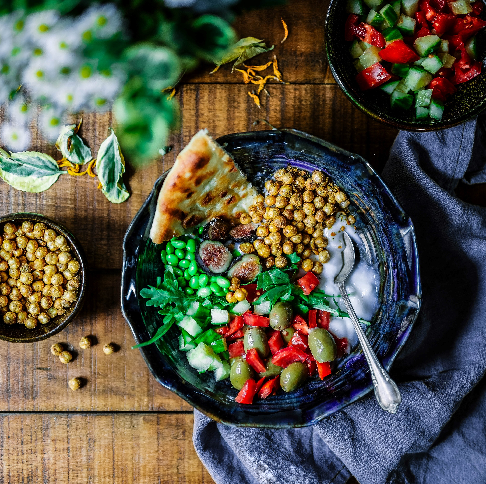

What is Nutrition?
Nutrition is the process by which living things
receive the food necessary for them to grow and be healthy.
Why is Nutrition so Importent?
A healthy diet packed withnutritionpromotes improved memory and brain health, supports normal
growth, development and ageing, helps in maintaining a healthy body weight,
and reduces the risk of chronic diseases leading to overall health and well-being.
What does it mean to Live a Healthy Lifestyle?
Living a healthy lifestyle generally includes both, physical and mental health are in
balance or functioning correctly together in a person.
Physical and mental health are directly linked, so that a change, good or bad,
in one will directly affect the other. Maintaining you rohysical health is called Fitness.
